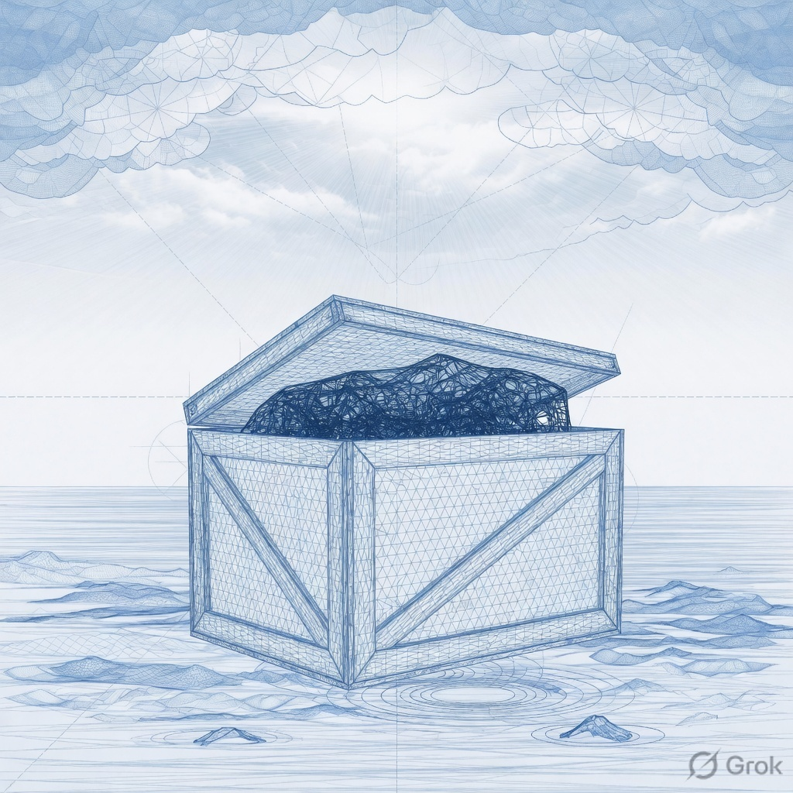
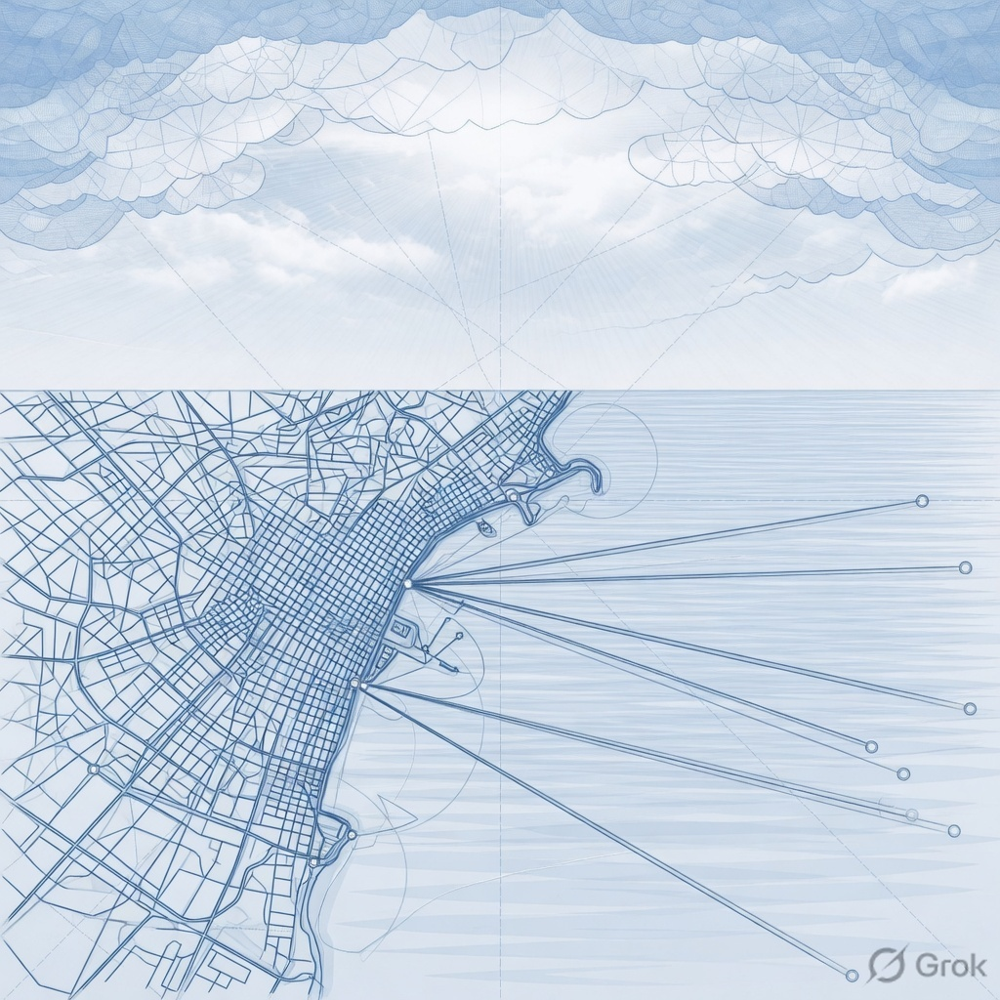
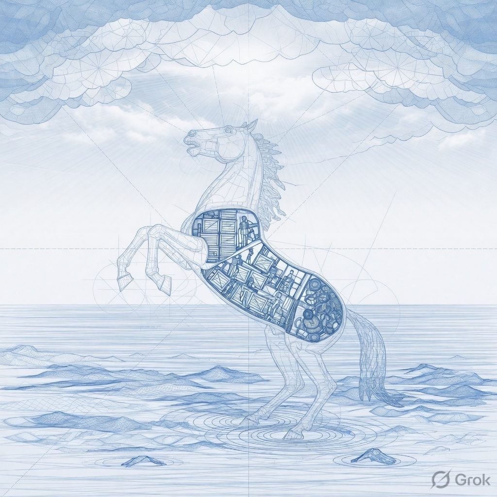

01
Signal fusion
Correlate endpoint, identity, and mail into a single narrative. Duplicate noise collapses; the first trusted object stays marked.
Threat intelligence / hidden payload
Attackers rarely break the door. They arrive as mail, vendors, and trusted sessions. Deepward shows the payload — not just the package.

They don’t break through the front door. They get invited.
The problem
A PDF from a known supplier. A calendar hold from a partner. A session that looks like last Tuesday. The package is familiar. The contents are not.
Deepward fuses mail, identity, and endpoint into one narrative so a SOC lead can say what moved, who invited it, and what to cut — before the board asks why dwell time is still a quarter long.

Platform
Not another alert pile. Each module writes into the same timeline so the horse has a beginning, a middle, and a cut.
Correlate endpoint, identity, and mail into a single narrative. Duplicate noise collapses; the first trusted object stays marked.
Social-engineering patterns: urgency language, lookalike domains, calendar hijacks, and help-desk resets that precede a token theft.
Vendor artifacts, build tickets, and invoice graphs. The crate is logged at the gate — and opened before it is wheeled inside.
Guided cuts with an audit trail a board can read: what we saw, what we isolated, what still needs a human.
Method
A sequence, not a slogan. Deepward only numbers steps that actually happen in that order.
Connect mail, identity, and endpoint. We keep the original object — the invoice, the session, the binary — as the spine of the case.
Lateral hops become a timeline. Who invited it, where it sat, which token it minted. Analysts edit the story; the model does not overwrite it.
Playbooks isolate the object and its children. The brief the board reads is the same document the night shift used.

Lateral movement
Eleven hops from a vendor PDF can hide in four tools. Deepward plots them on one coast — so “anomalous” becomes a path you can cut.
Product
A CSS specimen of the timeline analysts actually work. Labels are the product — not a generated screenshot.
The first trusted file stays pinned at the top of the case. Everything after is a child — so the night shift does not reopen “which PDF.” Walkthroughs use this same spine.
Inside the horse
Most stacks see the crate. Deepward opens it: nested objects, minted tokens, the person-shaped session that should not have a badge.
The cutaway is the product metaphor — a section drawing, not a myth. We do not name horses. We name the payload.

Proof
Fictional clearing house. Real shape of a walkthrough — vendor mail to settlement share in one afternoon.
“We had the PDF in four consoles and no sentence. Deepward wrote the sentence: the gift was the incident.”
Who it’s for
One case file. The CISO reads the cut. The SOC edits the path. IR keeps the original object.
CISO
Dwell time, blast radius, and the vendor name — in a page the audit committee will not send back.
SOC
Fused timeline, pinned gift, children you can dismiss. Nights do not restart the story at 02:00.
IR
Preserve the PDF, the token, the helper. Containment writes on top of evidence — it does not replace it.
Resources
Sample library notes. No live downloads — this is a template, not a feed.
Why the first trusted object should remain the spine of every case.
A playbook for invoice graphs, lookalike domains, and shared mailboxes.
How to report 277 days without turning the slide into a threat catalog.
Company
No. Deepward sits on mail, identity, and endpoint and writes a case file. Keep the lake. We are the sentence on top of it.
Ninety minutes. We bring one anonymized case in your shape — invoice, session, or vendor crate — and run it through Ingest / Narrate / Cut on a sample tenant.
In the fiction: your VPC, your keys. Retention is a contract line, not a marketing claim. This template does not collect data.
No. This is a sample design in a private library. Names, metrics, and Northglass Exchange are invented. Contact uses hello@deepward.example.
Walkthrough
Book a threat walkthrough. Same verb as the hero. Fictional product, finished craft.